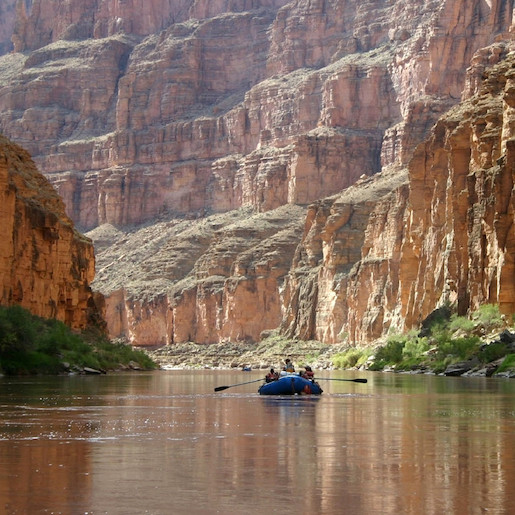

Pick the trip that fits your comfort level and adventure goals. We specialize in beginner-friendly coaching backed by a safety-first culture, so you can feel prepared, supported, and ready for the river.

Trips
Choose Your Adventure

Payette River: Splash & Laugh (Half-Day)
- Duration: ~4 hours (includes gear + safety talk)
- Difficulty: Class II–III
- Best for: Families, first-timers, youth groups
A fast, fun introduction to whitewater. Expect steady splashes, simple paddle commands, and lots of cheering—perfect if you want “real rapids” without an all-day commitment.

Snake River: Canyon Classic (Full Day)
- Duration: 7–8 hours
- Difficulty: Class II–III
- Best for: Scenic adventure, mixed-experience groups
The “everyone’s happy” trip—exciting sections plus time to enjoy the canyon, take photos, and relax between rapids. Great for couples, families with teens, and friend groups.

Colorado River: Calmwater + Rapids (Half-Day)
- Duration: ~4 hours (includes gear + safety briefing)
- Difficulty: Class II–III
- Best for: Families, beginners, team outings
The perfect balance of peaceful floating and splashy excitement. Enjoy scenic canyon views during calm stretches before navigating friendly rapids that build confidence without overwhelming first-time rafters.

Rogue River: Wilderness Run (2 Days)
- Duration: Overnight (2 days / 1 night)
- Difficulty: Class III (with calmer stretches)
- Best for: Teams, adventurous families, memory-makers
Two days on the river means deeper connection—more coaching, more laughs, and a camp-style evening under the stars. Ideal if you want the trip to feel like a real getaway.
Trip Comparison
| Trip | Duration | Difficulty | Season | Price | Best For |
|---|---|---|---|---|---|
| Payette: Splash & Laugh | Half-Day | II–III | May–Sep | $89 | Families & first-timers |
| Snake: Canyon Classic | Full Day | II–III | Jun–Sep | $149 | Scenery + adventure |
| Colorado: Calmwater + Rapids | Full Day | II–III | May–Oct | $159 | Mixed-experience groups |
| Rogue: Wilderness Run | 2 Days | III | Jun–Sep | $399 | Overnight adventure |
What to Bring
- Water shoes or secure sandals
- Quick-dry clothes (avoid cotton if it’s chilly)
- Sunscreen + sunglasses strap
- Refillable water bottle
- Any required meds (in a waterproof bag)